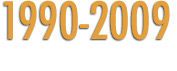
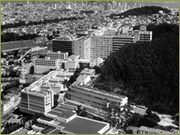

UCSF, aerial view, 1988
1990
UCSF acquires Mount Zion Hospital.
1990
Construction begins on Gladstone Institute of Virology and Immunology at SFGH.
1990
UCSF receives $3 million to establish the W.M. Keck Foundation Center for Integrative Neuroscience.
1991
Millie-Hughes Fulford, UCSF research scientist becomes part of space shuttle Columbia crew that conducts experiments on bone density loss.
1991
School of Nursing introduces the Master’s Entry Program in Nursing (MEPN).
1991
School of Nursing establishes the Research Center for Symptom Management.
1991
School of Dentistry establishes the NIH Pain Research Center within the department of oral and maxillofacial surgery.
1992
DNSc degree program in the School of Nursing closes admissions; PhD remains the only doctoral program.
1993
Gladstone Institute of Virology opens at SFGH.
1994
Valencia Pediatric Practice, later renamed with expanded services, Valencia Health Services, sponsored by the School of Nursing.
1995
Completion of ground floor classrooms, part of campus education center re-development, and enhanced mezzanine commons and café space in the School of Nursing building.
1995
School of Pharmacy establishes the San Francisco Branch of the United States Cochrane Center.
1996
Graduate Division combines Ph.D. programs in Anatomy, Endocrinology, Experimental Pathology, and Physiology to form a new Graduate Group and Ph.D. program in Biomedical Sciences.
1997
Stanley Prusiner wins Nobel Prize in Physiology or Medicine for his discovery of prions.
1997
UC Regents approve Mission Bay as the site for UCSF’s new campus and enter into an agreement with Catellus Development Corporation and the City and County of San Francisco for the donation of 43 acres of property in Mission Bay. The Mission Bay campus allows UCSF to double its research space, speed the pace of biomedical discovery, and help prepare a new generation of students. Phase 1 construction of $800 million included four research buildings, a campus community center, a student housing complex, two parking structures, and development of large open space. By 2006, about 1400 faculty, students, scholars and staff are located at the UCSF Mission Bay campus. At full build-out, 9,100 people are expected to work and study there.
1997
School of Pharmacy develops and establishes the California Poison Control System, a system for providing uniform poison services for the entire state via satellite centers at four locations throughout the State.
1997
UCSF Medical Center merges with Stanford Health Services to become UCSF Stanford Health Care. The merger is ultimately deemed unsuccessful and the 2 institutions de-merge in 2000.
1997
Glide Memorial Clinic, as a joint project of the School of Nursing and Catholic Healthcare West, begins operation.
1998
School of Dentistry creates The Postbaccalaureate Program, aimed at preparing disadvantaged students for entry into oral health care higher education.
1998
School of Pharmacy leads in the creation of three new cross-campus PhD programs: Biological and Medical Informatics, Pharmaceutical Sciences and Pharmacogenomics, and, with the School of Medicine, Chemistry and Chemical Biology.
1998
School of Pharmacy radically alters its Doctor of Pharmacy curriculum to establish innovative specialty pathways (Pharmaceutical Care, Pharmaceutical Health Policy and Management, Pharmaceutical Sciences).
1999
School of Dentistry completes modernization of all its Predoctoral Clinics.
1999
School of Nursing ranks first among nursing schools in NIH funding.
2000
De-merger of the UCSF Stanford Health Care.
Leadership
UCSF Chancellors:
-
Julius R. Krevans (1982-1993)
-
Joseph B. Martin (1993-1997)
-
Haile T. Debas (1997-1998)
-
J. Michael Bishop (1998-2009)
- Susan Desmond-Hellmann (2009-present)
Deans (Dentistry):
-
John C. Greene (1981-1994)
-
Karin Vargervick, Interim (1994-1995)
-
Charles N. Bertolami (1995-2007)
-
John Featherstone (2007-present)
Deans (Graduate Division)
-
Lloyd Kozloff, PhD (1981-1991)
-
C. Clifford Attkisson, Ph.D., Interim (1991-1992); Dean and Associate Vice Chancellor of Student Academic Affairs (1992-2005)
-
Patricia Calarco, Ph.D., Interim (2005-2007); Dean (2007-present)
Deans (Medicine):
-
Joseph Martin (1989-1993)
-
Haile Debas (1993-2003)
-
David Kessler (2003-2007)
-
Samuel Hawgood, Interim (2007-2009); Dean (2009-present)
Deans (Nursing):
-
Jane S. Norbeck: (1989-1999)
-
Kathleen Dracup (2000-present)
Deans (Pharmacy):
-
Jere E. Goyan (1967-1992)
-
George L. Kenyon (1993-1998)
-
Mary Anne Koda-Kimble (1998-present)
Directors (Medical Center)
-
William B. Kerr (1977-2000)
-
Mark R. Laret (2001-Present)
>> 2000+